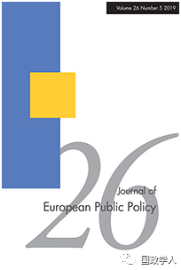
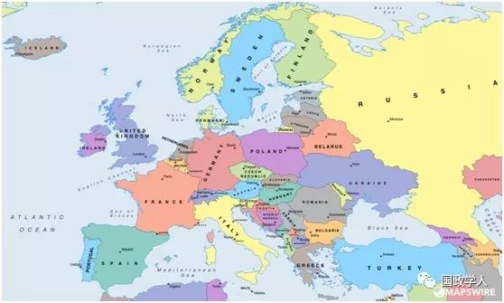
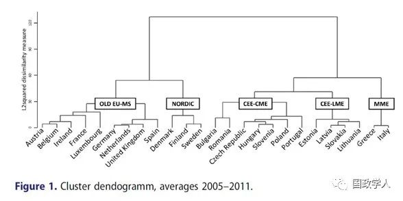
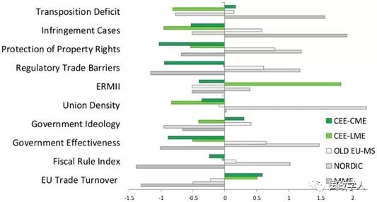
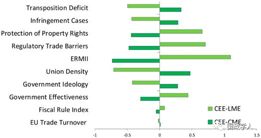

收录于合集

简 介
【作者】 **** Esther Ademmer ，基尔大学比较政治学临时教授，基尔世界经济研究所的研究助理。柏林自由大学政治学博士，柏林自由大学、柏林洪堡大学和波茨坦大学的国际关系硕士学位。研究重点是欧洲一体化和治理，比较政治经济以及转型国家的制度变迁等问题。
【编译】 ** 李玉婷**
** 【审校】** 许文婷、扎西旺姆、高嘉琳
【来源】
Esther Ademmer (2018) Capitalist diversity and compliance: economic reforms in Central and Eastern Europe after EU accession, Journal of EuropeanPublic Policy, 25:5, 670-689,
【期刊】 《欧洲公共政策期刊》是公共政策、欧洲政治和欧盟研究的代表期刊之一，该期刊着眼于欧洲公共政策的动态，鼓励应用定性和定量等社会科学方法。期刊主要包括欧洲和其他地区公共政策研究的理论和方法论、欧洲公共政策的比较研究、欧洲国家公共政策发展进程和欧盟政策等。

** 资本主义多样性与合规：加入欧盟后中东欧的经济改革**
Capitalist diversityand compliance: economic reforms in Central and Eastern Europe after EUaccession
内容提要
作者认为， 不同资本主义类型的中东欧国家有不同的经济合规记录，这些记录与国家和非国家行为体之间独特的协调模式相关 。通过聚类分析和案例研究，作者认为存在两个中东欧国家集群：一是由波罗的海国家和斯洛伐克组成的， 倾向自由市场经济的集群，其合规流程由基于市场的协调模式主导，其中政府意识形态和有效性的差异有更大的解释效力 。二是倾向于协调市场经济的集群， 其（非）合规过程基于共识和谈判，更具包容性 。各种国家和非国家行为体的相互作用和偏好对于理解该集群的合规尤为重要。

正文
1
**
** 导言
欧盟东扩后，“ 反弹假设 ”（backlash hypothesis）不再适用于分析新成员国遵守欧盟法律的表现。成员国加入后对哥本哈根经济标准的遵守情况较少受到关注。此外，已有的研究未能确定一系列因素，因此无法解释相似的东欧国家加入欧盟后的合规性。
本文将分析不同资本主义类型的中东欧国家加入欧盟后，是否存在加入欧盟后各自不同的经济领域合规记录，以及探讨国家和非国家行为体之间不同的制度化协调模式是否能够用来解释这一区别。作者将新老成员国加入后的合规情况与哥本哈根经济标准与单一市场法律的部分内容进行了比较。通过对25个国家的分层聚类分析以及案例研究，作者认为中欧和东欧国家（CEECs）并 不是同质统一的，而是对应两种不同的资本主义类型 。不同模式下的 协调机制 和 制度互补性 可以解释它们在合规过程与结果方面的差异。
**2
**
** ** 欧盟扩大后资本主义的多元化与合规性****
霍尔（Hall）和索斯基斯（Soskice）提出的资本主义的多样性（VoC）与制度互补性引发了人们关于研究西方资本主义和东欧资本主义的方法准确性的辩论。霍尔和索斯基斯 将发达经济体中的两种资本主义制度加以区分：以英国（美国）为例的自由市场经济（LME）和以德国为例的协调市场经济（CME）。
最近的一项研究表明，中东欧国家可以分为两类，一类倾向于 自由资本主义 ，比如斯洛伐克、波罗的海国家、保加利亚和罗马尼亚；一类倾向于 协调市场经济 ，包括维谢格拉德和斯洛文尼亚。这些理论有利于分析资本主义的类型如何适应入欧盟后的规范。
在倾向自由资本主义的协调模式中， 企业和其他行为主体以竞争为主，由国家协调市场掌控力较弱的区域 。在倾向协调市场经济的模式中， 其他非市场制度协调效果更佳 。不同的风格可能会影响其合规流程运作。
**3
** 实验方法
研究方法主要分为三步：
首先，作者使用 分层聚类的分析方法来检测是否存在具备不同合规性的国家 **/ 地区集群。分析内容为与经济领域的合规流程和结果相关的变量。**其次，作者 将以上分析结果与东西欧成员国资本主义制度的参考类型进行比较 。为了确定合规变量的聚类是否符合资本主义变体类型，后者必须在达成指标的基础上生成。其中，对集群变量平均值的比较结果应表明与LME或CME倾向经济相关的国家组是否显示出一些假定的解释特征变量和结果。最后，作者 利用二次文献中的案例研究证据来丰富之前的分析 ，这些证据旨在更详细地说明导致LME倾向与CME倾向经济的某些结果的独特过程。

**4
** 实验结果
（ 1 ）比较：合规和资本主义多样性
欧盟东扩后不同集群的国家是否按照各自的资本主义类型实现经济上的合规？如图1所示中东欧国家内存在较为明显的区别。中东欧国家集群大体上与资本主义多样性的类型一致。
波罗的海国家和斯洛伐克（CEE- LME）属于一个集群。波罗的海国家属于（新）自由市场经济类型，斯洛伐克则在进入欧盟后从倾向协调转为倾向自由。第二个中东欧国家的集群更加多样化，包括倾向于协调市场经济的经济体，包括“嵌入式新自由主义经济体”（DME）维谢格拉德国家，新社团主义的斯洛文尼亚，以及非中东欧国家葡萄牙。与参考类型不一致，保加利亚和罗马尼亚形成了一个倾向协调市场经济的子集群。该子集群反映出这两个国家也可被归为维谢格拉德和波罗的海国家之间的独立或混合资本主义种类。这一类国家存在更多的社团主义和较少的“法律排斥”现象。因此，就与经济合规过程相关的中心因素和结果进行聚类分析可以看出，中东欧国家并不是单一的集群。
（ 2）比较集群特征


东欧合规的集群与已有文献中VoC的类型一致。但它们是否也与合规驱动因素和结果的假设变化有关？为了研究东欧的合规集群是否在各种制度环境中呈现出不同特征， 作者将其与其他的中东欧国家的集群以及旧欧盟成员国的集群进行比较 。图2是两个东欧集群的比较。作者将子样本中的变量标准化，子样本只包括图1所示的属于CEE-CME和CEE- LME组的东欧欧盟成员国。图3则是25个国家的比较。
图2显示，以上两个东欧国家集群在经济合规流程的结果和驱动因素方面与VoC的预期存在较大差异。
首先， 在加入欧盟后的合规结果方面，它们与法律以及更具体的哥本哈根经济标准不同。 作者假设具有自由市场经济倾向的中东欧国家加入欧盟后在经济领域会有更多的国内争论，使其使其难以遵守欧盟的单一市场法律或者其他改革承诺。图2表现出，波罗的海和斯洛伐克国家（CEE- LME）换位赤字（注：欧盟采用的单一市场指令数量与成员国转换的单一市场指令之间的差距）较小，侵权案件较少，产权保护更好，监管贸易壁垒更少。在扩大的欧盟里，CEE- LME的转换缺失率最低，侵权案件数量最少。就合规性而言，它们更接近斯堪的纳维亚国家，而协调市场经济倾向的新成员国则与希腊和意大利在产权保护和监管贸易壁垒方面表现类似。
其次，这些数据也支持了某些合规解释变量特征的假设。 相较于 CEE-CME,CEE-LME 右倾政府更多，工会力量偏弱。 CME 倾向型经济体政府的党派偏好更加平衡。 CEE-LME集群的政府效率高于CEE- LME集群，略高于MME集群。中东欧国家的两个集群在财政制度和与欧盟的贸易联系方面的差异较少，而在其他欧盟成员国集群之间的差异则较大。
为了理解这些差异的影响，作者进行了 主成分分析 ，以分析数据的总体变化，并明确推动了聚类结果的差异。作者发现， 聚类分析更多地由与合规性结果相关而不是过程相关的变量解释。
**
**
**5
** 案例分析
作者假设可以通过不同资本主义类型解释经济领域（非）合规记录，且在这一过程中，某些解释变量的边际变化更为重要。
作者选取的案例为 解决劳动力市场和工作时间歧视问题的指令 （涵盖“一些社会政策领域最重要的欧盟立法”）。
作者假设CME倾向的中东欧国家的合规可能是更具包容性的寻求共识的过程的结果，因而取决于更多种类的国内参与者（包括反对党和社会伙伴）的偏好。斯洛文尼亚的特点是与社会伙伴达成共识，工会设法捍卫一些保护性条款。工会和中左翼政府的偏好一致性促进了捷克共和国工作时间指令的合规。捷克共和国的尝试却引发了两个联盟伙伴之一保守派基督教民主党人的反对，法案被保守党占主导的参议院否决，这一指令最终在捷克共和国的转换推迟。
作者另假设LME倾向型经济体的合规流程更大程度取决于政府的有效性，尤其是相对强大的政府党派的偏好变化。在拉脱维亚，准备转换该指令的行政协调最初顺利，然而基督教保守党强烈反对所有修正案，大大推迟了指令的转化。
简而言之， 合规过程中的不同解释因素的重要性因中东欧国家不同的资本主义类型而异。
**
**
**6
** 结 论
作者认为， 不同资本主义类型的中东欧国家有不同的经济合规记录，这些记录与国家和非国家行为体之间独特的协调模式相关 。通过不同资本主义类型解释经济领域（非）合规记录时，某些解释变量更为重要。作者认为存在两个中东欧国家集群：一是由倾向自由市场经济的由波罗的海国家和斯洛伐克组成的集群，其合规流程由基于市场的协调模式主导，其中政府意识形态和有效性的差异有更大的解释效力。二是倾向于协调市场经济的集群，（非）合规过程更具包容性，基于共识和谈判。各种国家和非国家行为体的相互作用和偏好对于理解该集群的合规更为重要。
_ ** _ 本文由国政学人微信平台独家编译首发**
更多阅读
【重磅速递】约瑟夫·奈：美国霸权的兴衰：从威尔逊到特朗普 | 国政学人
【重磅推荐】巴里·布赞：英国学派视角下的中国崛起 | 国政学人
【重磅速递】米尔斯海默：注定失败：自由主义国际秩序的兴衰 | 国政学人
【国际组织】IO杂志：联合国维和行动的武力运用问题研究 | 国政学人
【国际秩序】为什么自由主义国际秩序理念将美国外交政策引入歧途？| 国政学人
【关系理论】“关系”：世界政治关系理论的中国话语 | 国政学人
【百年国关】历史在国际社会中的应用：从巴黎和会到现在 | 国政学人
【英国学派】张勇进：中国与全球国际社会中的自由主义等级制：实力与对规范变迁的协商 | 国政学人
【地区秩序】论经济实力的可转化性：中国经济崛起与东亚安全秩序 | 国政学人
【中俄关系】不得已的伙伴：系统-单元动态与中俄关系 | 国政学人
【IPE研究】美国对外贸易政策的“1934年体制”是如何形成的？ | 国政学人
【现实主义】斯蒂芬·沃尔特：傲慢的终结与美国克制的新时代 | 国政学人